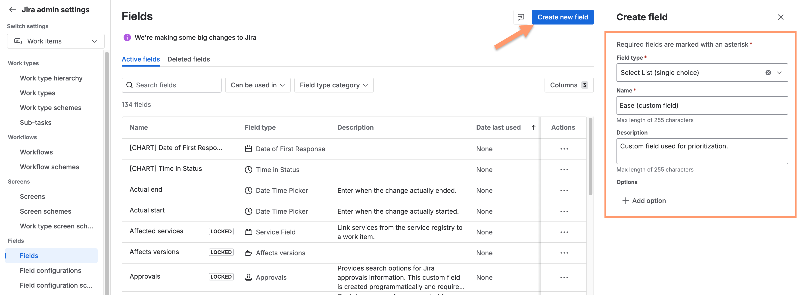
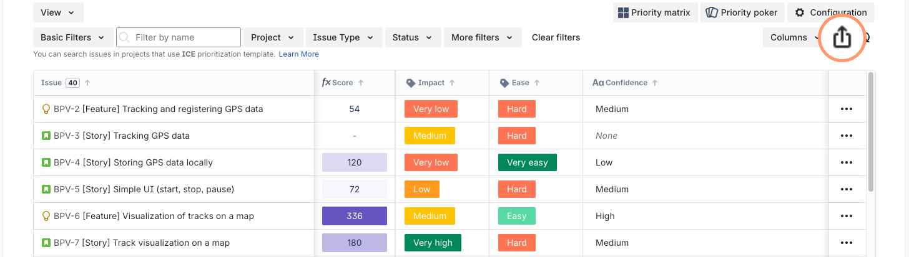
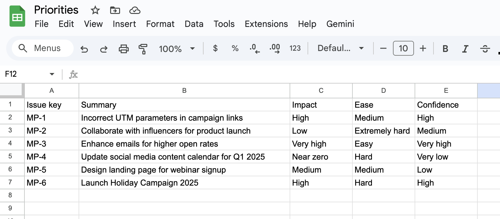
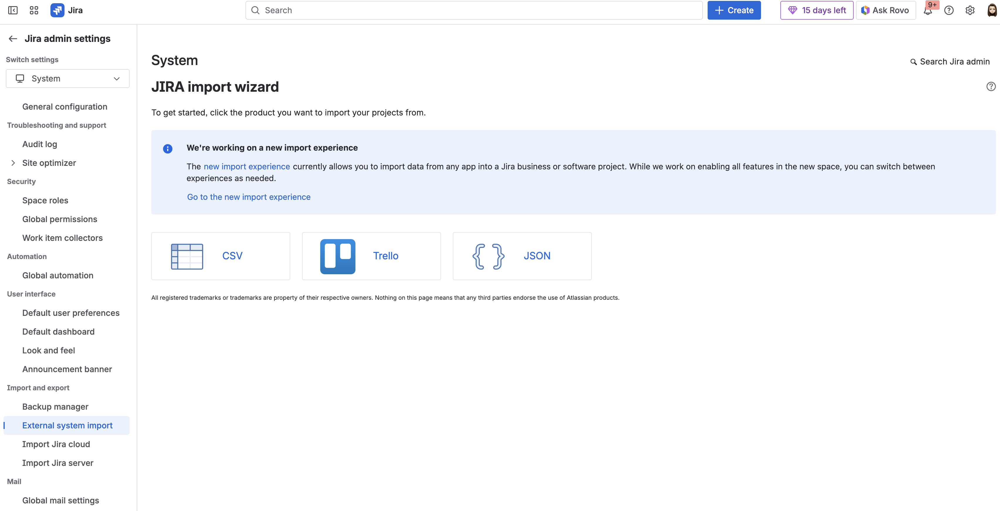
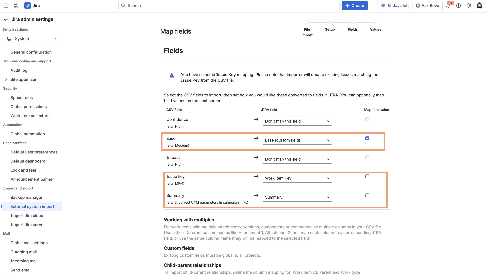
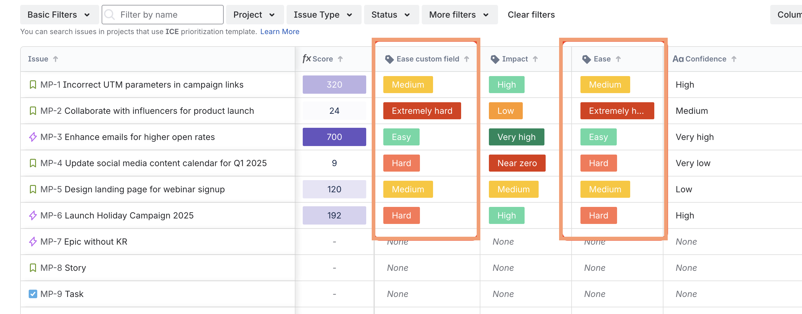

Use Jira custom fields with historical values
If you decide to use Jira custom fields in prioritization formulas as a replacement for existing prioritization metrics, you may want to preserve the historical values in those custom fields. This can be achieved by exporting data from Foxly and importing it into Jira using Jira’s import functionality.
Create custom fields in Jira that mirror the priority metrics (e.g., an Ease custom field).

Add these custom fields to the appropriate Jira screens for the relevant spaces so they are visible on all work item types.
In Foxly, click the Export table in CSV button.

In the exported file, split the work item key and summary into separate columns and save the file as a CSV.

In Jira admin settings, go to System > Import and Export, then click External System Import.
Important: Switch to the old experience (the new experience does not allow updating existing tickets).

Follow the steps in the wizard and select the appropriate Jira space.
Map CSV fields to Jira fields. Make sure to map the work item key. If a work item with the same key already exists in Jira, it will be updated.

Run the import.
In Foxly, add the newly created custom fields to the template. Do not change the formula or remove any metrics at this stage.
IMPORTANT Do NOT delete metrics until you verify that the custom fields have the same values as Foxly’s metrics.Only after confirming that all custom fields contain the correct values can you modify the formula.
